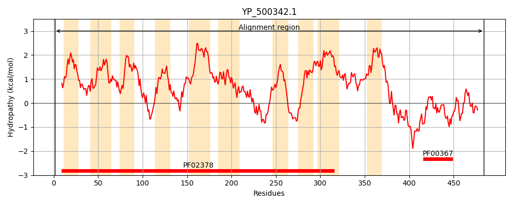
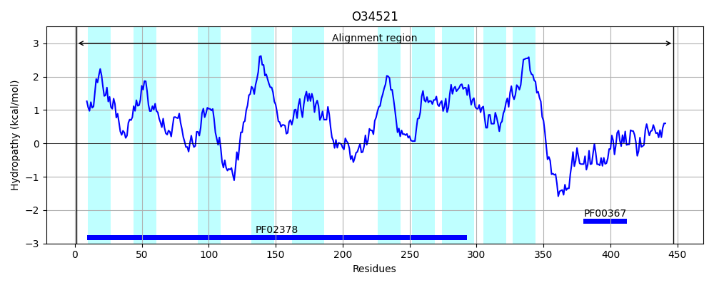
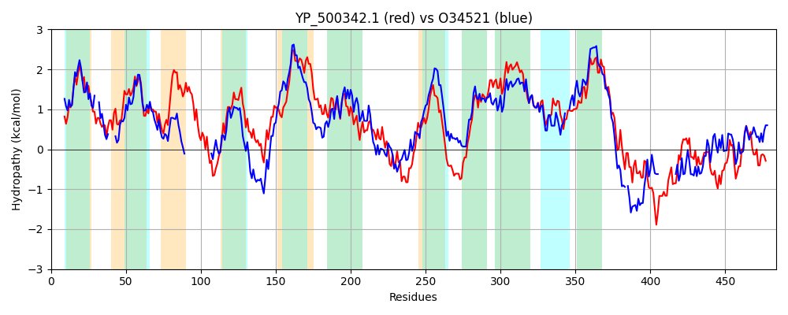

Hit Accession: O34521
Hit TCID: 4.A.1.1.7
Hit Description: gnl|BL_ORD_ID|7135 gnl|TC-DB|O34521|4.A.1.1.7 Phosphotransferase system (PTS) N-acetylglucosamine-specific enzyme IICB component (YflF) - Bacillus subtilis.
Mach Len: 484
e:0.000000
Query TMS Count : 10
Hit TMS Count: 10
TMS-Overlap Score: 5.100000
Predicted Substrates:CHEBI:28009;N-acetyl-beta-D-glucosamine
BLAST Alignment:
Score: 967 , Bit scores: 377 bits, E-value: 4.1e-127, Alignment length: 484, Percentage identity: 43
Query: 1 MYKFFQNLGRSLMLPVAILPAAAIIAGIGNTLNALHATPKIAMFFTTVGTTILEQLGILFAIGVAIGMAKKNDGAVALAATLGYFLVTVVLSPMKLAPLLGMKASEINSAFEKMNNGNVFVGIVIGLIAAYAYNKFSETELPLALSFFSGKRLVPIMTAFYCTFLVVILLFLWPLLYSWIVKFGESIVGLGSFGAFIYGVANRLLIPTGLHHALNSVFWFDTIGINDIGKFQSGKDAIKGITGRYQAGFFPIMMFGIPAAALAMYHTAKTTQKKQVYGWFLASSVAAFFVGVTEPIEFAFMFVVPILYVVHALLTGLSLFIAATFHWTAGFSFSAGLIDYVLSLINPVSNHPLMLLVQGVVFFILYYVIFRVVIQVFNLNTIGRGENELVDPTVVKDNIAPGENDIKQSKYHQHAIQILEGLGGQENIVNLTNCATRLRLELKDTSIIDKQKIKNAGAVGVTVNGKHSTQVIVGTHVQQVADEI 484
M F Q LG+S MLP+A+LPA II +G + P F GT + + L ++FAIG+AIG++K ++GA L+ + Y ++ +K NN VF GI+ GLIA Y YN+F +T+LP L FFSG+RLVPI+TA L I +WP + S I FGE ++GLG GA I+G+ NRLLIP GLHH LN++FWF N + + A G Y GFFPIMMFG+PAA LAM TAK +++K G + ++ AF G+TEPIEFAFMF+ P+LY VHA+LTGLSLFI +GFSFSAG IDYVLS ++ PL+LL+ G+ + +Y+++F V+I+ NL T GR E++ VD + ++ + +I +L+GLGG+EN+ + +CATRLRL +KDT+++D+ +K AGA GV +G S QVI+G +V+ A+E+
Sbjct: 1 MLSFLQKLGKSFMLPIAVLPAVGIILALGR--EDVFNIP----FVYQAGTAVFDHLPLIFAIGIAIGISKDSNGAAGLSGAISYLMLDAA-----------------TKTIDKTNNMAVFGGIIAGLIAGYTYNRFKDTKLPEYLGFFSGRRLVPILTAIITIILAGIFGVVWPPIQSCINSFGEWMLGLGGIGAGIFGLFNRLLIPLGLHHVLNNIFWFQFGEYNGVTGDLARFFAKDPTAGTYMTGFFPIMMFGLPAACLAMVVTAKPSKRKATAGMMIGFALTAFITGITEPIEFAFMFLSPLLYAVHAVLTGLSLFIVNWLGIRSGFSFSAGAIDYVLSY--GIAEKPLLLLLVGICYAAVYFIVFYVLIKALNLKTPGR-EDDDVDEVLDENTVQDVNENI-----------MLKGLGGKENLQTIDHCATRLRLTVKDTALVDEALLKKAGAKGVVKSGGQSVQVIIGPNVEFAAEEL 447 | Protein Hydropathy Plots: |
|---|
|  |  |
Pairwise Alignment-Hydropathy Plot:
|
|---|
|  |